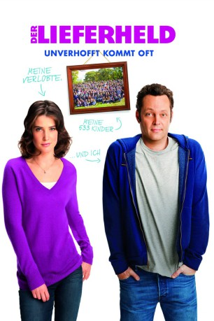

#9952 Der Lieferheld - Unverhofft kommt oft
Alternativ: Delivery Man
 
 IMDB-Wertung: 6.4 / 10
IMDB-Wertung: 6.4 / 10  Metascore: 44
Metascore: 44 
Das nennt man produktiv: Auf eine stolze Vaterschaft von 533 Kindern soll es David Wozniak gebracht haben – nur das er davon keinen blassen Schimmer hatte bisher. Dementsprechend verdattert ist er, als ihm von der Samenbank, für die er seit Beginn der 90er spendete, eröffnet wird, dass ein Teil der daraus entstandenen Kinder nun die Offenlegung seiner Identität erklagen will. Und als wenn dies der Probleme nicht schon genug wäre, überlegt seine Freundin, ob David überhaupt geeignet erscheint, der Vater ihrer Kinder zu werden.
Jahr: 2013
Dauer: 104 Minuten
FSK: 0
Land: USA Studio: Touchstone PicturesTonspuren: DTS - ,
Untertitel: Englisch,
Auflösung: 1080p (1920x800) Größe: 4915 MB
Genre: Drama, Komödie
Regisseur: Ken Scott
Drehbuch: Ken Scott, Ken Scott, Martin Petit
Soundtrack: Jon Brion
Darsteller:
 Vince Vaughn als David
Vince Vaughn als David Chris Pratt als Brett
Chris Pratt als Brett Cobie Smulders als Emma
Cobie Smulders als Emma- Andrzej Blumenfeld als Mikolaj
 Simon Delaney als Victor
Simon Delaney als Victor Bobby Moynihan als Aleksy
Bobby Moynihan als Aleksy- Dave Patten als Adam
- Adam Chanler-Berat als Viggo
 Britt Robertson als Kristen
Britt Robertson als Kristen Jack Reynor als Josh
Jack Reynor als Josh- Amos VanderPoel als Taylor
- Matthew Daddario als Channing
 Jessica Williams als African American Spa Worker
Jessica Williams als African American Spa Worker- Leslie Ann Glossner als Young Romantic Girl
- Derrick Arthur als Young Boozer
- Michael Oberholtzer als Bag Boy
- Sébastien René als Ryan
- Stephen Ellis als 18th Century Professor
- Zachary Hernandez als Brett's Four-Year-Old
- Erin Gerasimovich als Brett's Six-Year-Old
- Kyle Sutton als Brett's Eight-Year-Old
 Starla Benford als Personal Care Attendant
Starla Benford als Personal Care Attendant Damian Young als Attorney Williams
Damian Young als Attorney Williams Finnerty Steeves als Loan Officer #1
Finnerty Steeves als Loan Officer #1 Richard Poe als Loan Officer #3
Richard Poe als Loan Officer #3- Jessica Abo als Reporter #1
 Logan Crawford als Reporter #2
Logan Crawford als Reporter #2- Darin Guerrasio als Customer #1
 Bruce Altman als Mass Action Attorney
Bruce Altman als Mass Action Attorney Alexander Flores als Teenage Clerk
Alexander Flores als Teenage Clerk- Stephanie Berry als Straightforward Nurse
- Joseph Tudisco als Sport Store Owner
- Akim Black als Scalper
- Kate Dalton als Sabrina
 Glenn Fleshler als Coffee Shop Owner
Glenn Fleshler als Coffee Shop Owner- Matthew Blumm als Male Nurse
- Angela Bellotte als Girl with Short Skirt
- Charlie Romanelli als Hardhat
- Pasha Pellosie als Boyfriend #1
- Connor Fox als Boyfriend #2
 Jay Leno als Jay Leno
Jay Leno als Jay Leno Bill Maher als Bill Maher
Bill Maher als Bill Maher- Nancy Nagrant als Victor's Wife
- Ben Bailey als (uncredited)
- Esteban Benito als Parking Guy (uncredited)
 James Thomas Bligh als (uncredited)
James Thomas Bligh als (uncredited)- Michael R. Bollentin als Videographer / Sounds Guy / Bar Parton (uncredited)
- Kathleen Choe als Nurse (uncredited)
- Andrew Duplessie als Biological Son (uncredited)
- Danny Guzman als Kid on the Horse in Playground (uncredited)
Datei: X:\2013(I-M)\Lieferheld - Unverhofft kommt oft, Der (2013, FSK0, 1920x800).mkv seit 15.11.2018
Festplatte: HD 2013(I-Z)-2014(A-Z)
 Es gibt insgesamt 89 Filme in der Gruppe '2013(I-M)'
Es gibt insgesamt 89 Filme in der Gruppe '2013(I-M)'